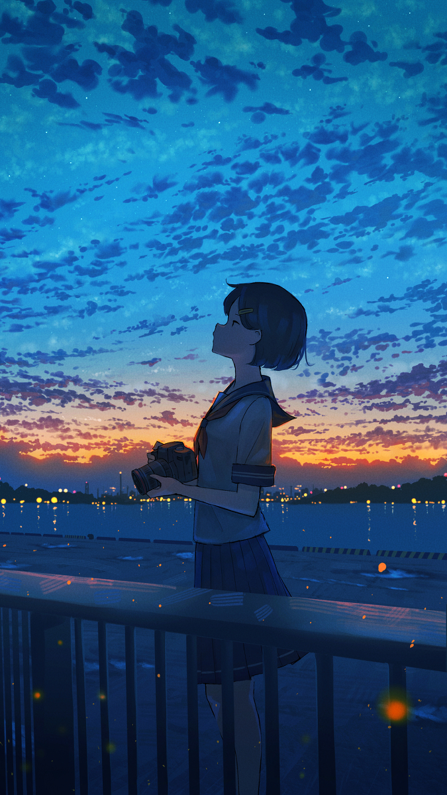
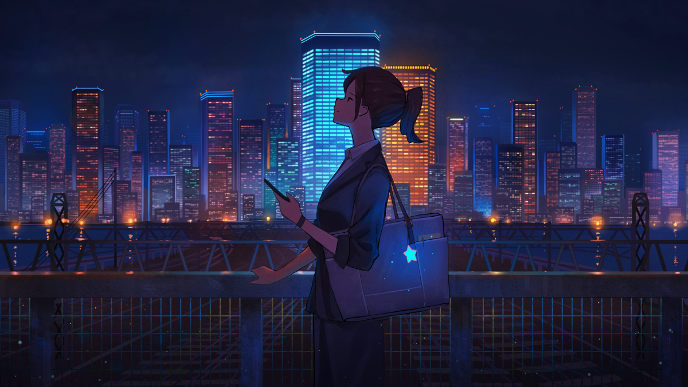
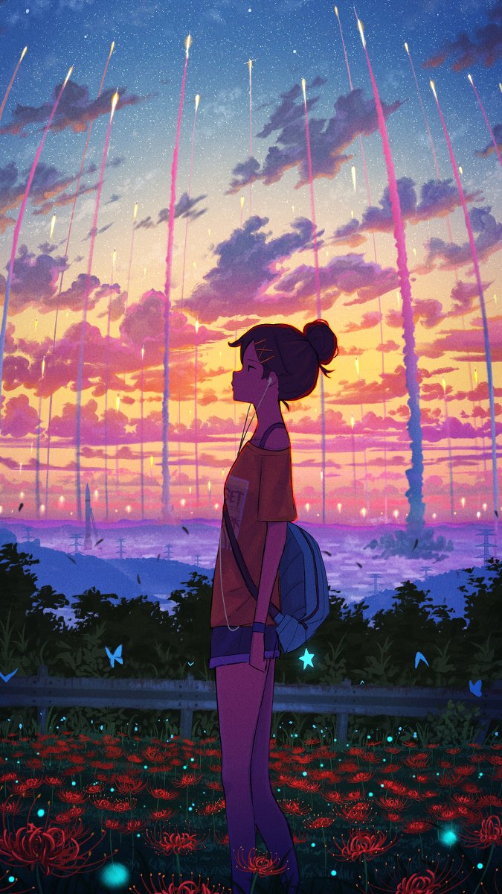
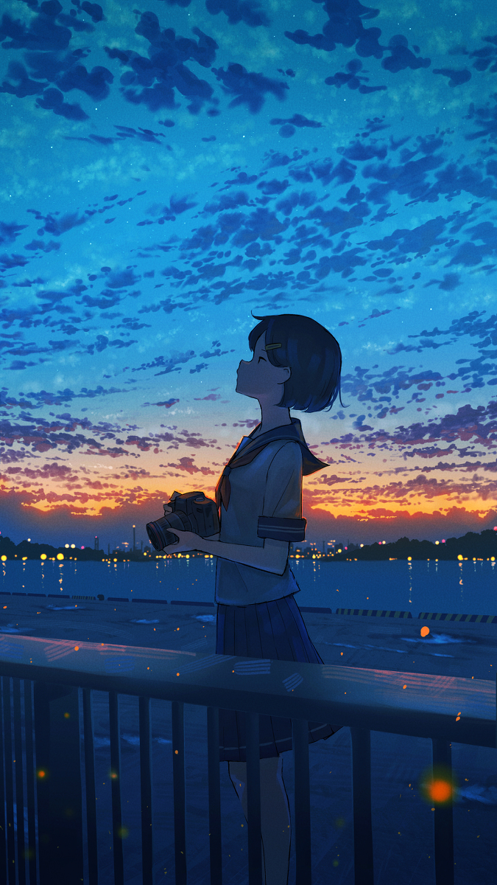
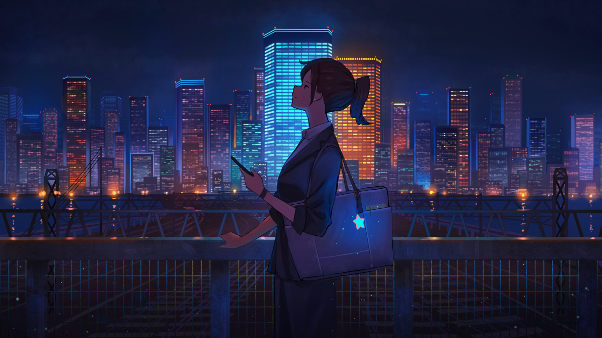
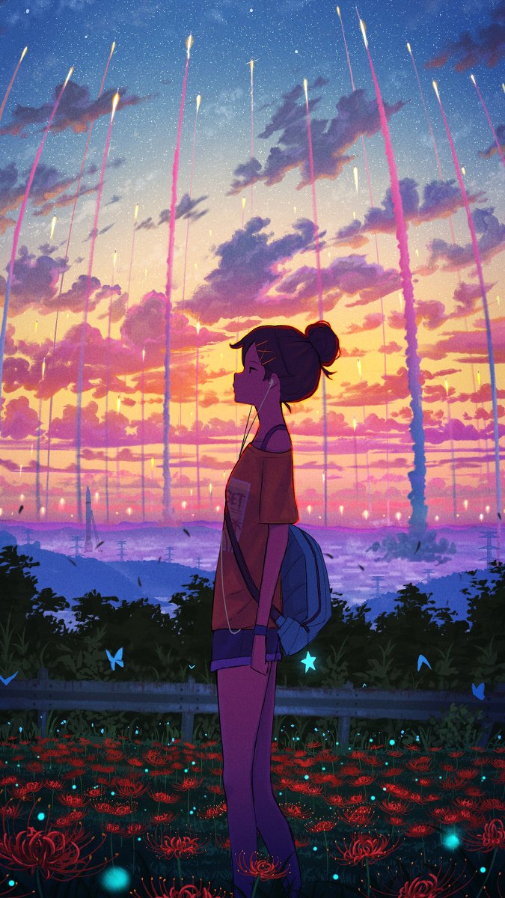

画师背后：
"我常常觉得，我的孤独是与生俱来的。它像一朵沉静的花，独自开放在我的心海里，只有我能懂得它的美，这美让我骄傲，自由和独立。"
画师pasoputi的插画风格很统一，这也造就了他自己独特的风格。他的作品大多是以高中生为主的侧身画。画面中只有一个人物，都是只有侧身没有正脸。插画的画风朴素而不失色彩，主题鲜明，画面整体意境拿捏到位，给人一种孤独和与世隔绝的感觉。
我收藏的这一部分只是他的一部分作品，主要选取的是关于享受孤独，生活中的压力等主题的插画——当然也有我自己的共鸣在里面（しふりさん的插画其实更给我这种感觉w）
"对于孤独的人来说，耳机线像是输液管，听音乐的时候很像生病打点滴，是一个治愈的过程。喜欢一个人安静地呆着，喜欢一个人在静寂的夜晚，静静地怀念曾经的美好，有些伤感，有些遗憾，也许人生就是由一串串的遗憾拼接而成的，有了遗憾，有了忧伤，人生才不会色彩单调，索然无味，人生才有了触动心扉的思念，才有了牵动神经的回忆。潮湿的心情融入在这无边的夜色中，渐渐蔓延，蔓延到遥远的天边。"在欣赏他的插画之时，我的脑海中跳动着音符。
首页
插画列表
画师列表
最近收藏
上传
搜索


 




